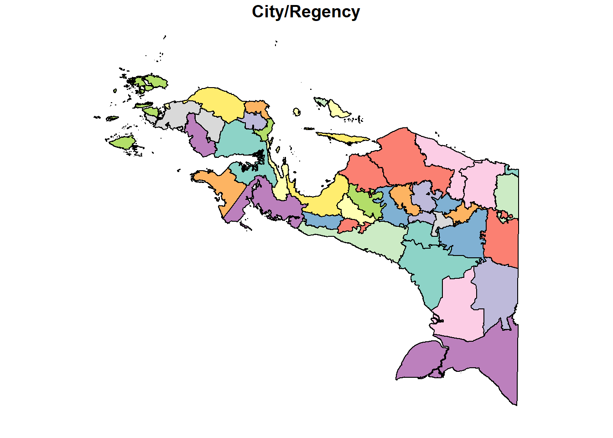
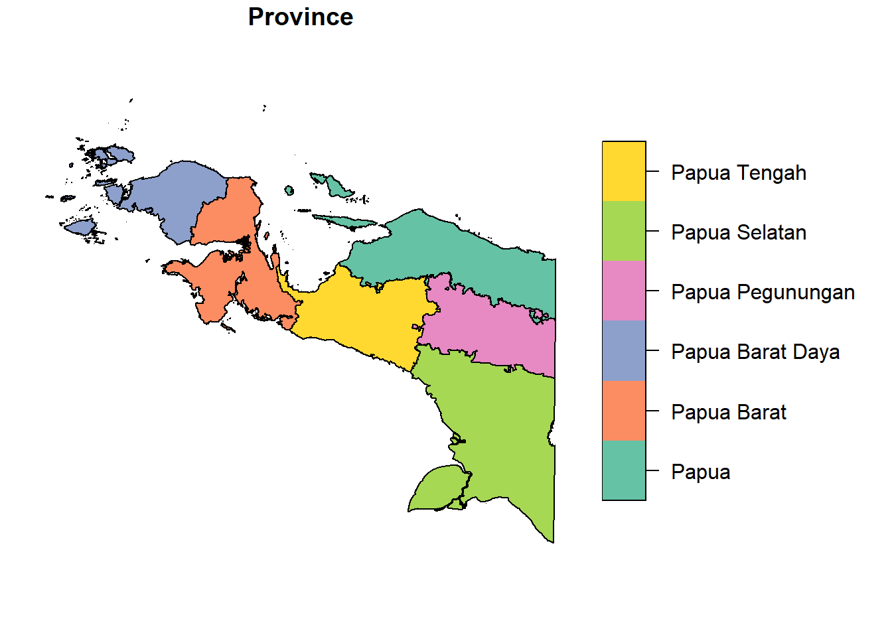
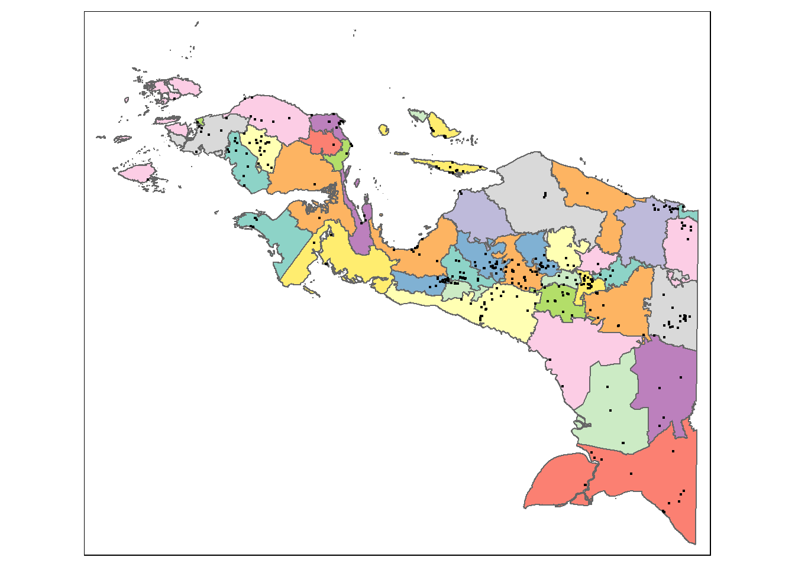

pacman::p_load(tidyverse, sf, tmap, spatstat, rmapshaper)Data Wrangling
Data Wrangling for Geospatial Analytics Shiny Application
1.0 Overview
We prepare the following data layers:
A study area layer in sf polygon feature format, at Indonesia’s admin1 (provinsi/province) level.
A study area layer in sf polygon feature format, at Indonesia’s admin2 (kota & kabupaten/city & regency) level.
A point events layer in sf point feature format, showing the location, date and other attributes of armed conflict events in the Papua region.
2.0 Packages
The following R packages are used:
tidyverse, a collection of R packages designed for data science, and which provides functions to import, transform, and visualise the data.
sf, to import, manage and process vector-based geospatial data in R.
tmap, which provides functions for plotting cartographic quality static point patterns maps or interactive maps.
spatstat, a comprehensive open-source toolbox for analysing Spatial Point Patterns.
rmapshaper, a package for editing and simplifying sf objects.
p_load() function of pacman package is used to install and load these packages into the R environment.
3.0 Preparing geospatial data
3.0.1 Importing the data and reprojecting it
Import Batas_Wilayah_KelurahanDesa_10K_AR as a simple features object, which we name admin. This dataset provides information on Indonesia’s admin4 (village/desa and kelurahan) administrative boundaries as of 2023.
admin <- st_read(dsn = "data/BATAS WILAYAH KELURAHAN-DESA 10K", layer = "Batas_Wilayah_KelurahanDesa_10K_AR")
glimpse(admin)We also observe that admin is projected in WGS 84.
Sometimes, when importing geospatial data into R, the coordinate system of the source data is wrongly assigned during the importing process. We check the CRS.
st_crs(admin)The EPSG code indicated is 4326, which is correct since the data is projected in WGS 84.
3.0.2 Selecting the study area
admin contains 83518 features, each representing a village. However, for our study, we only require the data for villages in the Papua region, which consists of 6 provinces (as of 2023): Papua Selatan (South Papua), Papua Tengah (Central Papua), Papua Pegunungan (Mountains Papua), Papua Barat Daya (South-West Papua), Papua Barat (West Papua), and Papua.
The WADMPR field of admin contains the name of the province that each village belongs to.
All the provinces in the Papua region have the word “Papua” in their names. In the following code chunk, we extract the rows of admin that contain the word “Papua” in the WADMPR field and save them as a new object papua.
grepl() of base R is used to obtain a logical vector indicating whether each element of admin$WADMPR contains a match to the word “Papua”. Then, filter() of dplyr (part of the tidyverse) is used to retain only the corresponding rows of admin_. Next, rename() of dplyr is used to rename the WADMPR field to “Province”.
papua <- admin %>%
filter(grepl("Papua", WADMPR, fixed = TRUE)) %>%
rename(Province = WADMPR)
papuaAs required, papua is a sf polygon data.frame. It has 7374 features.
Finally, we check whether geometries of all the features in papua are valid.
length(which(st_is_valid(papua) == TRUE))Only 7371 features have valid geometries, out of a total of 7374. Using st_make_valid() of sf, we make the invalid geometries valid. Next, we use mutate() of dplyr to replace the existing geometry column with a new one containing the valid geometries. We save the result as a new sf polygon data.frame, papua_cleaned.
papua_cleaned <- papua %>%
mutate(geometry = st_make_valid(geometry))
length(which(st_is_valid(papua_cleaned) == TRUE))papua_cleaned is projected in WGS 84. In this code chunk, we reproject it in the projected coordinate system in the DGN95 / UTM zone 53S coordinate system, and save the reprojected data as a new object papua_23883.
papua_23883 <- st_transform(papua_cleaned, crs = 23883)
st_geometry(papua_23883)3.1 Preparing the admin1 and admin2 layers
3.1.1 Obtaining admin2 boundaries
The WADMKK field of papua_cleaned contains the name of each city/regency that each village belongs to.
We first use rename() of dplyr to rename the WADMKK field to “City/Regency”. Next, we use group_by() of dplyr to group the different villages according to the province as well as city/regency they belong in. Then, we use summarise() of dplyr and st_union() of sf to combine the geometries of the different villages within each city/regency and dissolve the boundaries between villages, thus obtaining the admin2 (city/regency) level boundaries. Finally, we use ms_simplify() of rmapshaper to simplify the polygons, using the Visvalingam algorithm.
papua_adm2 <- papua_23883 %>%
rename(`City/Regency` = WADMKK) %>%
group_by(Province, `City/Regency`) %>%
summarise(geometry = st_union(geometry)) %>%
ms_simplify()
papua_adm2We can now save the papua_adm2 study area layer using write_rds() of readr, part of the tidyverse.
write_rds(papua_adm2, "data/rds/papua_adm2.rds")We visualise the admin2 boundaries in papua_adm2 using plot().
plot(papua_adm2["City/Regency"])
3.1.2 Obtaining admin1 boundaries
Now, we can use group_by() of dplyr to group the different cities/regencies according to the province they belong in. Then, we use summarise() of dplyr and st_union() of sf to combine the geometries of the different cities/regencies within each province and dissolve the boundaries between them, thus obtaining the admin1 (province) level boundaries.
papua_adm1 <- papua_adm2 %>%
group_by(Province) %>%
summarise(geometry = st_union(geometry))We can now save the papua_adm1 study area layer using the write_rds() function of readr, part of the tidyverse.
write_rds(papua_adm1, "data/rds/papua_adm1.rds")plot(papua_adm1)
4.0 Preparing point events data
4.0.1 Importing the data
We import 2015-01-01-2024-06-30-Indonesia.csv. This dataset provides location, date, and other attribute information on 6 types of armed conflict events in Indonesia occurring from 1 January 2015 to 30 June 2024. Since it is in csv format, we use the read_csv() function of readr, part of the tidyverse, to import it, and save it as an object named points.
points <- read_csv("data/2015-01-01-2024-06-30-Indonesia.csv")
glimpse(points)Rows: 17,116
Columns: 31
$ event_id_cnty <chr> "IDN17267", "IDN17269", "IDN17293", "IDN17428", "ID…
$ event_date <chr> "30 June 2024", "30 June 2024", "30 June 2024", "30…
$ year <dbl> 2024, 2024, 2024, 2024, 2024, 2024, 2024, 2024, 202…
$ time_precision <dbl> 1, 1, 2, 1, 1, 1, 2, 1, 1, 1, 1, 1, 1, 1, 1, 1, 1, …
$ disorder_type <chr> "Political violence", "Demonstrations", "Demonstrat…
$ event_type <chr> "Violence against civilians", "Protests", "Protests…
$ sub_event_type <chr> "Attack", "Peaceful protest", "Peaceful protest", "…
$ actor1 <chr> "Military Forces of Indonesia (2014-)", "Protesters…
$ assoc_actor_1 <chr> NA, "AJI: Alliance of Independent Journalists; Jour…
$ inter1 <chr> "State forces", "Protesters", "Protesters", "Rebel …
$ actor2 <chr> "Civilians (Indonesia)", NA, NA, NA, NA, "Civilians…
$ assoc_actor_2 <chr> "TPNPB: West Papua National Liberation Army", NA, N…
$ inter2 <chr> "Civilians", NA, NA, NA, NA, "Civilians", NA, "Stat…
$ interaction <chr> "State forces-Civilians", "Protesters only", "Prote…
$ civilian_targeting <chr> "Civilian targeting", NA, NA, NA, NA, "Civilian tar…
$ iso <dbl> 360, 360, 360, 360, 360, 360, 360, 360, 360, 360, 3…
$ region <chr> "Southeast Asia", "Southeast Asia", "Southeast Asia…
$ country <chr> "Indonesia", "Indonesia", "Indonesia", "Indonesia",…
$ admin1 <chr> "Central Papua", "Jakarta", "East Java", "West Java…
$ admin2 <chr> "Intan Jaya", "Central Jakarta", "Surabaya", "Bogor…
$ admin3 <chr> "Sugapa", "Gambir", "Genteng", "Central Bogor", "Re…
$ location <chr> "Sugapa", "Jakarta - Central", "Surabaya", "Bogor",…
$ latitude <dbl> -3.7430, -6.1806, -7.2492, -6.5944, -6.9222, 3.5833…
$ longitude <dbl> 137.0500, 106.8283, 112.7510, 106.7891, 107.6070, 9…
$ geo_precision <dbl> 2, 1, 1, 1, 1, 1, 2, 1, 1, 1, 1, 1, 1, 1, 1, 1, 1, …
$ source <chr> "Human Rights Monitor", "Kompas", "Tribunnews", "Ko…
$ source_scale <chr> "Other", "National", "National", "National", "Natio…
$ notes <chr> "On 30 June 2024, the Indonesian military forces ar…
$ fatalities <dbl> 1, 0, 0, 0, 0, 0, 0, 1, 0, 0, 0, 0, 0, 0, 0, 0, 0, …
$ tags <chr> NA, "crowd size=no report", "crowd size=no report",…
$ timestamp <dbl> 1720552459, 1720552459, 1720552459, 1721769310, 172…4.0.2 Converting and Reprojecting the Data
The longitude and latitude fields capture the x- and y-coordinates of the data points respectively. They appear to be in the WGS 84 geographic coordinate system (in which latitudes range from -90 to 90 and longitudes range from 0 to 360).
We convert points to an sf object.
points_sf <- st_as_sf(points, coords = c("longitude","latitude"), crs = 4326)
st_geometry(points_sf)Geometry set for 17116 features
Geometry type: POINT
Dimension: XY
Bounding box: xmin: 95.2127 ymin: -10.7323 xmax: 140.8694 ymax: 5.8925
Geodetic CRS: WGS 84
First 5 geometries:We reproject points_sf in the DGN95 / UTM zone 53S coordinate system, and save the reprojected data as a new object points_23883.
points_23883 <- st_transform(points_sf, crs = 23883)
st_geometry(points_23883)Geometry set for 17116 features
Geometry type: POINT
Dimension: XY
Bounding box: xmin: -4304403 ymin: 8787709 xmax: 1153416 ymax: 10846150
Projected CRS: DGN95 / UTM zone 53S
First 5 geometries:4.0.3 Selecting Points in the Study Area
points_23883 provides information on armed conflict events throughout Indonesia, and the admin1 field contains the name of the province where each point event took place.
As mentioned earlier, our study area is the region of Papua, consisting of 6 provinces. 4 of these, namely Papua Selatan (South Papua), Papua Tengah (Central Papua), Papua Pegunungan (Highland Papua), Papua Barat Daya (Southwest Papua), were only created in 2022, when they were carved out of the original 2 provinces of Papua and Papua Barat (West Papua).
We use filter() and grepl() to extract only the armed conflict events that take place in provinces containing the word “Papua” from points_23883. In addition, we use select(), also part of dplyr, to retain only the fields containing the event date, event type, involved parties (actor 1 and actor 2), the province (admin 1) and regency/city (admin2) where the event occurred, the number of fatalities, notes about the event, and the point geometry, for each event.
Lastly, we use mutate() from dplyr and dmy() of base R to convert the values in the event_date field to Date class.
points_study <- points_23883 %>%
filter(grepl("Papua", admin1, fixed = TRUE)) %>%
select(event_date, event_type, actor1, actor2, admin1, admin2, fatalities, notes, geometry) %>%
mutate(event_date = dmy(event_date))
points_studySimple feature collection with 2942 features and 8 fields
Geometry type: POINT
Dimension: XY
Bounding box: xmin: -23320.68 ymin: 9056317 xmax: 1153416 ymax: 9956392
Projected CRS: DGN95 / UTM zone 53S
# A tibble: 2,942 × 9
event_date event_type actor1 actor2 admin1 admin2 fatalities notes
* <date> <chr> <chr> <chr> <chr> <chr> <dbl> <chr>
1 2024-06-30 Violence against civ… Milit… Civil… Centr… Intan… 1 On 3…
2 2024-06-29 Strategic developmen… Civil… <NA> Centr… Puncak 0 Disp…
3 2024-06-29 Battles TPNPB… Milit… Centr… Puncak 1 On 2…
4 2024-06-28 Protests Prote… <NA> Papua Jayap… 0 On 2…
5 2024-06-28 Protests Prote… <NA> South… Sorong 0 On 2…
6 2024-06-28 Battles TPNPB… Milit… Centr… Puncak 0 On 2…
7 2024-06-27 Protests Prote… <NA> South… South… 0 On 2…
8 2024-06-27 Protests Prote… <NA> Papua Jayap… 0 On 2…
9 2024-06-22 Battles Milit… TPNPB… South… Maybr… 0 On 2…
10 2024-06-22 Protests Prote… <NA> Papua Jayap… 0 On 2…
# ℹ 2,932 more rows
# ℹ 1 more variable: geometry <POINT [m]>There are 2942 features in the points_study sf point data.frame, corresponding to 2942 armed conflict point events.
We verify that the geometries of all the point events are valid.
length(which(st_is_valid(points_study) == TRUE))[1] 29424.0.4 Dealing with Duplicate Points
In spatial point patterns analysis, a significant issue is the presence of duplicates. The statistical methodology used for spatial points patterns processes is based largely on the assumption that processes are simple, that the points cannot be coincident.
To check for duplicate points in points_study, we use the following code chunk:
any(duplicated(points_study$geometry))[1] TRUETo tackle this problem, we use st_jitter() of sf to slightly shift the duplicate points by 10 meters each such that they no longer occur at the same point, to make them unique.
points_study_jitter <- points_study %>%
st_jitter(amount = 10)5.0 Ensuring Consistency in Area Names
In papua_adm1 and papua_adm2, the province and city/regency names appear to be in Bahasa Indonesia. On the other hand, in the admin1 and admin2 fields of points_study, the names given are in English.
The following code chunk uses filter(), group_by() and summarize() of dplyr to identify the English-language province names in points_study_jitter that are different from the Bahasa Indonesia names in papua_adm1, and vice versa.
points_study_jitter %>%
filter(!(admin1 %in% papua_adm1$Province)) %>%
group_by(admin1) %>%
summarize()Simple feature collection with 5 features and 1 field
Geometry type: MULTIPOINT
Dimension: XY
Bounding box: xmin: -23323.36 ymin: 9056307 xmax: 1149980 ymax: 9956383
Projected CRS: DGN95 / UTM zone 53S
# A tibble: 5 × 2
admin1 geometry
<chr> <MULTIPOINT [m]>
1 Central Papua ((509633.3 9625055), (548483.5 9624829), (548483.9 9624835), …
2 Highland Papua ((799229.9 9492617), (815137.3 9535327), (815462.5 9508162), …
3 South Papua ((847413.8 9386172), (847415.2 9386177), (847415.9 9386180), …
4 Southwest Papua ((-23323.36 9777960), (34593.1 9953391), (34607 9953383), (81…
5 West Papua ((199616.3 9676358), (199616.4 9676347), (199618.8 9676360), …papua_adm1 %>%
filter(!(Province %in% points_study_jitter$admin1)) %>%
group_by(Province) %>%
summarize()Simple feature collection with 5 features and 1 field
Geometry type: GEOMETRY
Dimension: XY
Bounding box: xmin: -135197 ymin: 8985733 xmax: 1167404 ymax: 10119770
Projected CRS: DGN95 / UTM zone 53S
# A tibble: 5 × 2
Province geometry
<chr> <GEOMETRY [m]>
1 Papua Barat MULTIPOLYGON (((257409.2 9566412, 257428.4 9566326, 256937.4…
2 Papua Barat Daya MULTIPOLYGON (((-87979.27 9792818, -88115.85 9792918, -88128…
3 Papua Pegunungan POLYGON ((941726.2 9472843, 941327.6 9472931, 940247.6 94728…
4 Papua Selatan MULTIPOLYGON (((885530.8 9077392, 885418.5 9077170, 885388.7…
5 Papua Tengah MULTIPOLYGON (((522662 9507146, 522824.3 9506943, 522629 950…Next, we use mutate() of dplyr and str_replace_all() of stringr (also part of the tidyverse) to replace the English-language names in points_study with the Bahasa Indonesia equivalents from papua_adm1.
points_study1 <- points_study_jitter %>%
mutate(admin1 = str_replace_all(admin1, c("Central Papua" = "Papua Tengah", "Highland Papua" = "Papua Pegunungan", "South Papua" = "Papua Selatan", "Southwest Papua" = "Papua Barat Daya", "West Papua" = "Papua Barat")))Next, we use filter(), group_by() and summarize() of dplyr again to identify the city/regency names in points_study1 that are different from the Bahasa Indonesia names in papua_adm2, and vice versa.
points_study1 %>%
filter(!(admin2 %in% papua_adm2$`City/Regency`)) %>%
group_by(admin2) %>%
summarize()Simple feature collection with 5 features and 1 field
Geometry type: MULTIPOINT
Dimension: XY
Bounding box: xmin: 148961.1 ymin: 9593967 xmax: 951799.2 ymax: 9867860
Projected CRS: DGN95 / UTM zone 53S
# A tibble: 5 × 2
admin2 geometry
<chr> <MULTIPOINT [m]>
1 Central Mamberamo ((951786 9593984), (951790.2 9593972), (951792.7 9593974), …
2 Fakfak ((199616.3 9676358), (199616.4 9676347), (199618.8 9676360)…
3 South Manokwari ((407185.2 9833544), (407187 9833534), (407189.5 9833533), …
4 South Sorong ((148961.1 9842817), (151801.5 9837437), (164414.4 9860473)…
5 Yapen Islands ((602125.8 9805478), (602136 9805475), (607100.1 9801749), …papua_adm2 %>%
filter(!(`City/Regency` %in% points_study1$admin2)) %>%
group_by(`City/Regency`) %>%
summarize()Simple feature collection with 8 features and 1 field
Geometry type: GEOMETRY
Dimension: XY
Bounding box: xmin: 75213.72 ymin: 9561238 xmax: 1168500 ymax: 10103670
Projected CRS: DGN95 / UTM zone 53S
# A tibble: 8 × 2
`City/Regency` geometry
<chr> <GEOMETRY [m]>
1 Fak Fak MULTIPOLYGON (((177915.4 9672819, 177758.2 9672809, 177621.…
2 Kepulauan Yapen MULTIPOLYGON (((552706.1 9814300, 552956.7 9814289, 553283.…
3 Kota Jayapura MULTIPOLYGON (((1168366 9684435, 1168420 9691385, 1168500 9…
4 Kota Sorong MULTIPOLYGON (((83597.88 9894877, 83682.29 9894911, 83547.5…
5 Mamberamo Tengah POLYGON ((903830.1 9582811, 904487.2 9583295, 904744.8 9583…
6 Manokwari Selatan POLYGON ((354405.2 9830783, 354512.5 9830718, 354861 983063…
7 Sorong Selatan MULTIPOLYGON (((141431.6 9825800, 142083.3 9825339, 141791.…
8 Supiori MULTIPOLYGON (((548701 9904498, 548579.1 9904430, 548618.9 …We use mutate() of dplyr and str_replace_all() of stringr to replace the names in points_study1 with the corresponding equivalents from papua_adm2.
points_study_final <- points_study1 %>%
mutate(admin2 = str_replace_all(admin2, c("Central Mamberamo" = "Mamberamo Tengah", "Fakfak" = "Fak Fak", "South Manokwari" = "Manokwari Selatan", "South Sorong" = "Sorong Selatan", "Yapen Islands" = "Kepulauan Yapen")))
points_study_finalSimple feature collection with 2942 features and 8 fields
Geometry type: POINT
Dimension: XY
Bounding box: xmin: -23323.36 ymin: 9056307 xmax: 1153416 ymax: 9956383
Projected CRS: DGN95 / UTM zone 53S
# A tibble: 2,942 × 9
event_date event_type actor1 actor2 admin1 admin2 fatalities notes
* <date> <chr> <chr> <chr> <chr> <chr> <dbl> <chr>
1 2024-06-30 Violence against civ… Milit… Civil… Papua… Intan… 1 On 3…
2 2024-06-29 Strategic developmen… Civil… <NA> Papua… Puncak 0 Disp…
3 2024-06-29 Battles TPNPB… Milit… Papua… Puncak 1 On 2…
4 2024-06-28 Protests Prote… <NA> Papua Jayap… 0 On 2…
5 2024-06-28 Protests Prote… <NA> Papua… Sorong 0 On 2…
6 2024-06-28 Battles TPNPB… Milit… Papua… Puncak 0 On 2…
7 2024-06-27 Protests Prote… <NA> Papua… Soron… 0 On 2…
8 2024-06-27 Protests Prote… <NA> Papua Jayap… 0 On 2…
9 2024-06-22 Battles Milit… TPNPB… Papua… Maybr… 0 On 2…
10 2024-06-22 Protests Prote… <NA> Papua Jayap… 0 On 2…
# ℹ 2,932 more rows
# ℹ 1 more variable: geometry <POINT [m]>We can now save the points_study_final layer using write_rds().
write_rds(points_study_final, "data/rds/points_study_final.rds")We can now plot all the layers using tmap.
tmap_mode("plot")
tm_shape(papua_adm1) +
tm_polygons(col = "MAP_COLORS") +
tm_shape(papua_adm2) +
tm_polygons(col = "MAP_COLORS") +
tm_shape(points_study_final) +
tm_dots()